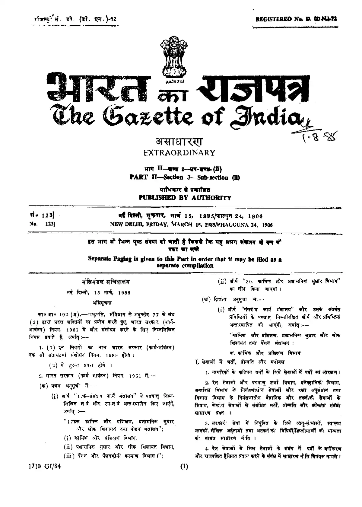
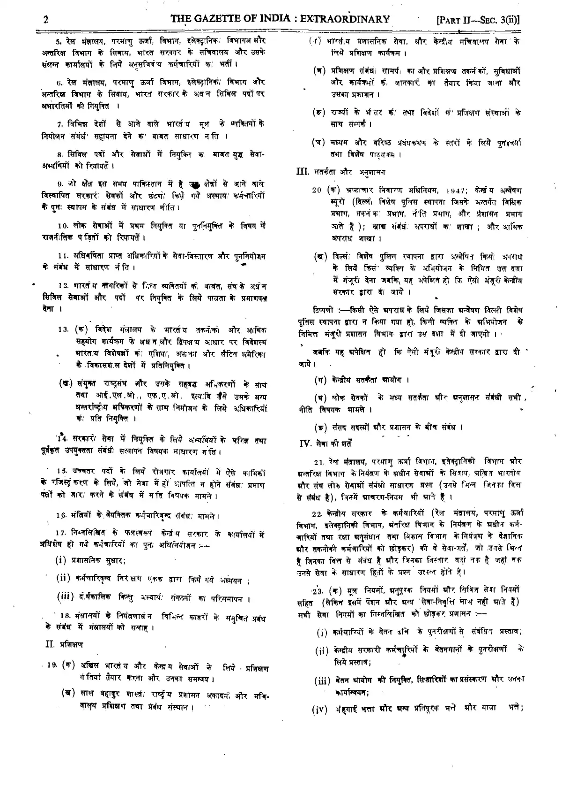
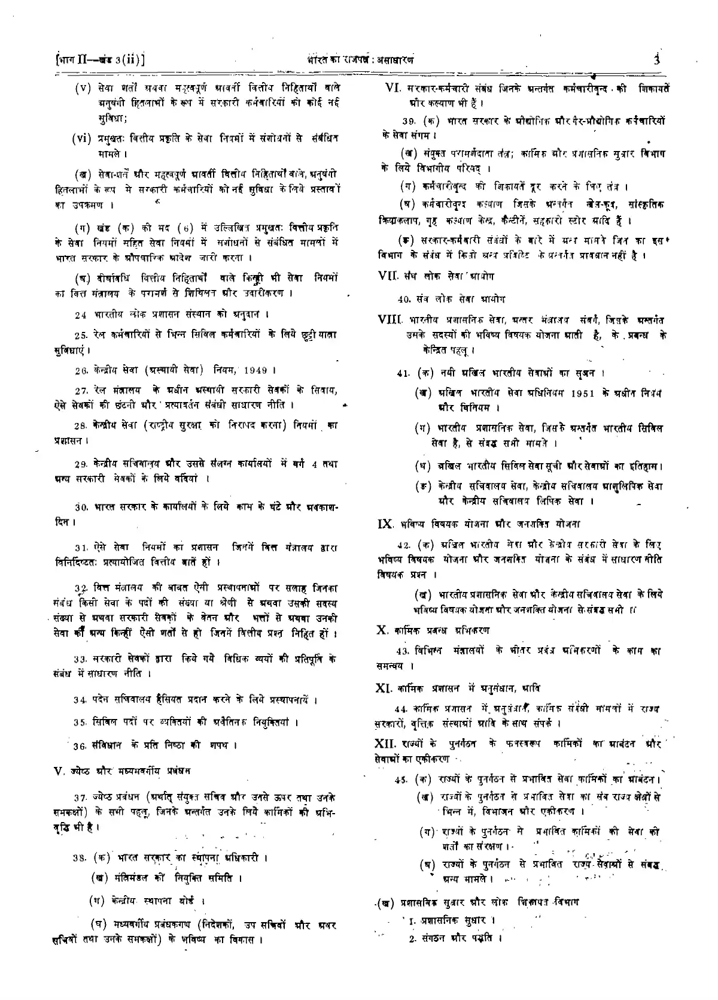
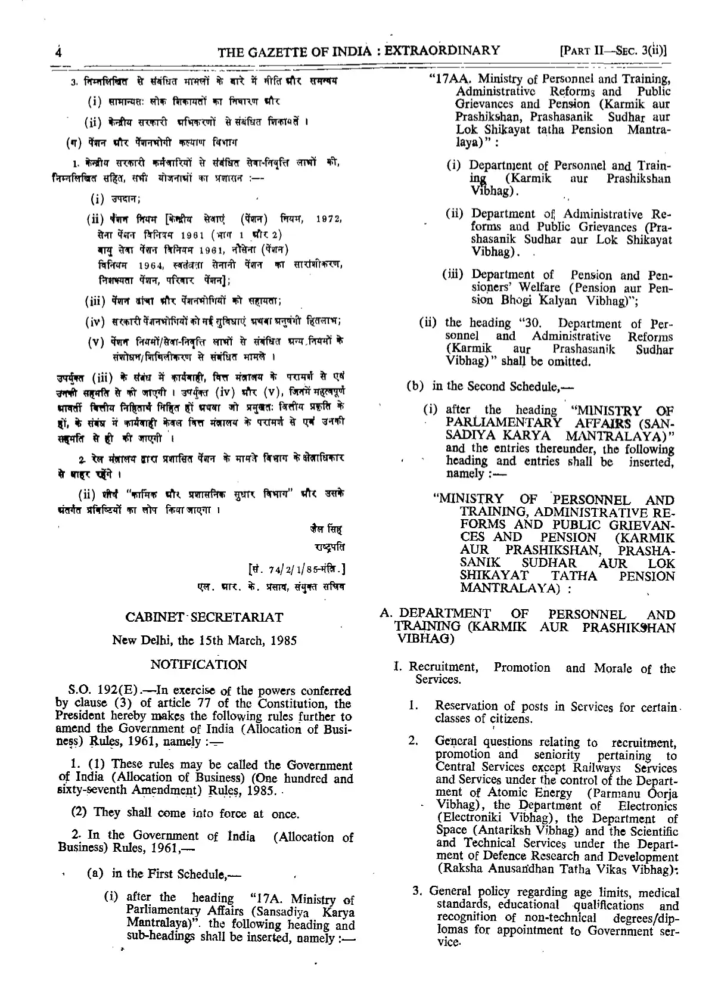
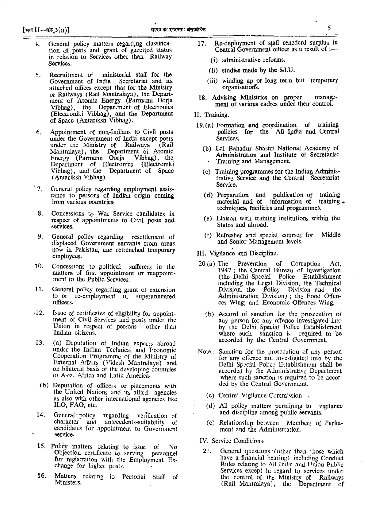
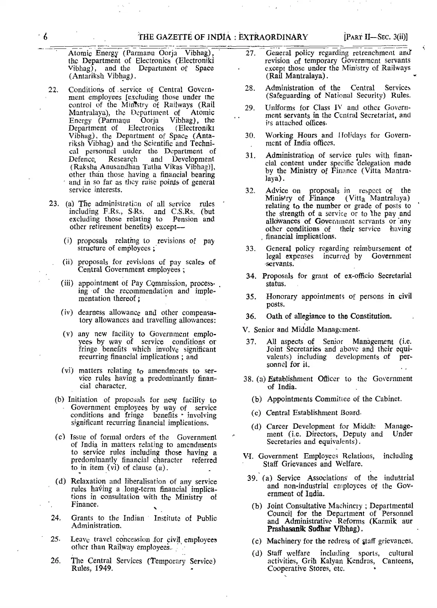
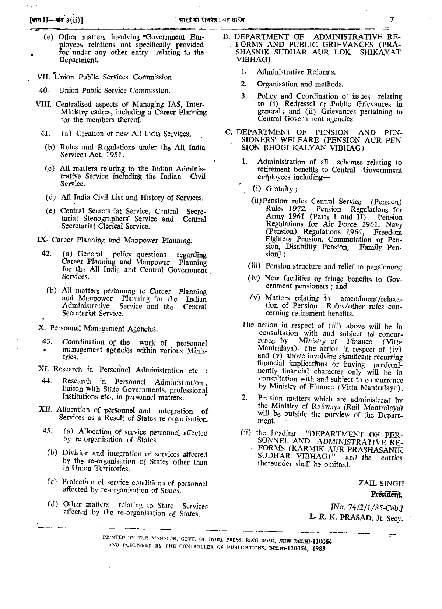

Amendment #167 (S.O. 192(E), 1985)
4 changes: 2 to the First Schedule, 2 to the Second Schedule. 4 applied
What it did to the ministries
- renamedDepartment of Personnel and Administrative Reforms is renamed Ministry of Personnel and Training, Administrative Reforms and Public Grievances and Pensions change 1, 2, 3 · histories: Personnel
The order, page by page
Page 1 of 8

Page 2 of 8

Page 3 of 8

Page 4 of 8

123after Schedule 1 › Ministry of Parliamentary Affairs
- 17AA. Ministry of Personnel and Training Administrative Reforms and Public Grievances and Pension (Karmik aur Prashikshan, Prashasanik Sudhar aur Lok Shikayat tatha Pension Mantralaya)" :
- i. Department of Personnel and Training
- ii. Department of Administrative Reforms and Public Grievances
- iii. Department of Pension and Pensioners' Welfare
applied at schedule 1 › ministry 17AA in the Rules after #167
new text differs
Schedule 1 › Department of Personnel and Administrative Reforms
applied at schedule 1 › department 30 in the Rules after #167
after Schedule 2 › MINISTRY OF PARLIAMENTARY AFFAIRS
- MINISTRY OF PERSONNEL AND TRAINING, ADMINISTRATIVE RE- FORMS AND PUBLIC GRIEVAN- CES AND PENSION
- A. DEPARTMENT OF PERSONNEL AND TRAINING
- I. Recruitment, Promotion and Morale of the Services.
- 1. Reservation of posts in Services for certain classes of citizens.
- 2. General questions relating to recruitment promotion and seniority pertaining to Central Services except Railways Services and Services under the control of the Department of Atomic Energy (Parmanu Ôorja Vibhag), the Department of Electronics (Electroniki Vibhag), the Department of Space (Antariksh…
- 3. General policy regarding age limits, medical standards, educational qualifications and recognition of non-technical degrees/diplomas for appointment to Government service.
and 111 more
- 4. General policy matters regarding classification of posts and grant of gazetted status in relation to Services other than Railway Services.
- 5. Recruitment of ministerial staff for the Government of India Secretariat and its attached offices except that for the Ministry of Railways (Rail Mantralaya), the Department of Atomic Energy (Parmanu Oorja Vibhag), the Department of Electronics (Electroniki Vibhag), and the Department of Space…
- 6. Appointment of non-Indians to Civil posts under the Government of India except posts under the Ministry of Railways (Rail Mantralaya), the Department of Atomic Energy (Parmanu Oorja Vibhag), the Department of Electronics (Electroniki Vibhag), and the Department of Space (Antariksh Vibhag).
- 7. General policy regarding employment assistance to persons of Indian origin coming from various countries.
- 8. Concessions to War Service candidates in respect of appointments to Civil posts and services.
- 9. General policy regarding resettlement of displaced Government servants from areas now in Pakistan, and retrenched temporary employees.
- 10. Concessions to political sufferers in the matters of first appointment or reappointment to the Public Services.
- 11. General policy regarding grant of extension to or re-employment of superannuated officers. -12. Issue of certificates of eligibility for appointment of Civil Services and posts under the Union in respect of persons other than Indian citizens.
- 13.
- a. Deputation of Indian experts abroad under the Indian Technical and Economic Cooperation Programme of the Ministry of External Affairs (Videsh Mantralaya) and on bilateral basis of the developing countries of Asia, Africa and Latin America.
- b. Deputation of officers or placements with the United Nations and its allied agencies as also with other international agencies like ILO, FAO, etc.
- 14. General - policy regarding verification of character and antecedents-suitability of candidates for appointment to Government service.
- 15. Policy matters relating to issue of No Objection certificate to serving personnel for registration with the Employment Exchange for higher posts.
- 16. Matters relating to Personal Staff of relating to Ministers. ----T
- 17. Re-deployment of staff renederd surplus in Central Government offices as a result of: --
- i. administrative reforms.
- ii. studies made by the S.I.U.
- iii. winding up of long term but temporary organisation's.
- 18. Advising Ministries on proper management of various cadres under their control.
- II. Training.
- 19.
- a. Formation and coordination of training policies for the All India and Central the Services.
- b. Lal Bahadur Shastri National Academy of Administration and Institute of Secretariat - Training and Management.
- c. Training programmes for the Indian Administrative Service and the Central Secretariat Service.
- d. Preparation and publication of training material and of information of training - techniques, facilities and programmes.
- e. Liaison with training institutions within the States and abroad.
- f. Refresher and special courses for Middle and Senior Management levels.
- III. Vigilance and Discipline.
- 20.
- a. The Prevention of Corruption Act 1947; the Central Bureau of Investigation (the Delhi Special Police Establishment including the Legal Division, the Technical Division, the Policy Division and the Administration Division); the Food Offences Wing; and Economic Offences Wing.
- b. Accord of sanction for the prosecution of any person for any offence investigated into by the Delhi Special Police Establishment where such sanction is required to be accorded by the Central Government.
- Note Sanction for the prosecution of any person for any offence not investigated into by the Delhi Special Police Establishment shall be accorded by the Administrative Department where such sanction is required to be accorded by the Central Government.
- c. Central Vigilance Commission. .
- d. All policy matters pertaining to vigilance and discipline among public servants.
- c. Relationship between Members of Parliament and the Administration.
- IV. Service Conditions.
- 21. General questions (other than those which have a financial bearing) including Conduct Rules relating to All India and Union Public Services except in regard to services under the control of the Ministry of Railways (Rail Mantralaya), the Department of Atomic Energy (Parmanu Oorja Vibhag) the…
- 22. Conditions of service of Central Government employees [excluding those under the control of the Ministry of Railways (Rail Mantralaya), the Department of Atomic Energy (Parmaqu Oorja Vibhag), the Department of Electronics (Electronikı Vibhag), the Department of Space (Antariksh Vibhag) and the…
- 23.
- a. The administration of all service rules including F.RS., S.Rs. and C.S.Rs. (but excluding those relating to Pension and other retirement benefits) except--
- i. proposals relating to revisions of pay structure of employees
- ii. proposals for revisions of pay scales of Central Government employees
- iii. appointment of Pay Commission, process. ing of the recommendation and implementation thereof
- iv. dearness allowance and other compensatory allowances and travelling allowances:
- v. any new facility to Government employees by way of service conditions or fringe benefits which involve significant recurring financial implications; and
- vi. matters relating to amendments to service rules having a predominantly financial character.
- b. Initiation of proposals for new facility to Government employees by way of service conditions and fringe benefits + involving significant recurring financial implications.
- c. Issue of formal orders of the Government of India in matters relating to amendments to service rules including those having a predominantly financial character referred to in item (vi) of clause (a).
- d. Relaxation and liberalisation of any service rules having a long-term financial implications in consultation with the Ministry of Finance.
- 24. Grants to the Indian Institute of Public Administration.
- 25. Leave travel concession for civil employees other than Railway employees.
- 26. The Central Services (Temporary Service) Rules, 1949.
- 27. General policy regarding retrenchment and revision of temporary Government_servants except those under the Ministry of Railways (Rail Mantralaya).
- 28. Administration of the Central Services (Safeguarding of National Security) Rules.
- 29. Uniforms for Class IV and other Government servants in the Central Secretariat, and its attached offices.
- 30. Working Hours and Holidays for Government of India offices.
- 31. Administration of service rules with financial content under specific delegation made by the Ministry of Finance (Vitta Mantralaya).
- 32. Advice on proposals in respect of the Ministry of Finance (Vitta Mantralaya) relating to the number or grade of posts to the strength of a service or to the pay and allowances of Government servants or any other conditions of their service having 1 financial implications.
- 33. General policy regarding reimbursement of legal expenses incurred by Government -servants.
- 34. Proposals for grant of ex-officio Secretarial status.
- 35. Honorary appointments of persons in civil posts.
- 36. Oath of allegiance to the Constitution.
- V. Senior and Middle Management.
- 37. All aspects of Senior Senior Management (i.e. Joint Secretaries and above and their equivalents) including developments of personnel for it.
- 38.
- a. Establishment Officer to the Government of India.
- b. Appointments Committee of the Cabinet.
- c. Central Establishment Board.
- d. Carcer Development for Middle Management (i.e. Directors, Deputy and Under Secretaries and equivalents).
- VI. Government Employees Relations, including Staff Grievances and Welfare.
- 39.
- a. Service Associations of the industrial and non-industrial employces of the Government of India.
- b. Joint Consultative Machinery; Departmental Council for the Department of Personnel and Administrative Reforms (Karmik aur Prashasanik Sudhar Vibhag).
- c. Machinery for the redress of staff grievances
- d. Staff welfare including sports, cultural activities, Grih Kalyan Kendras, Canteens Cooperative Stores, etc. [ भाग II - 3 (ii) ]
- e. Other matters involving "Government Employees relations not specifically provided for under any other entry relating to the Department.
- VII. *Union Public Services Commission
- 40. Union Public Service Commission.
- VIII. Centralised aspects of Managing IAS, Inter- Ministry cadres, including a Career Planning for the members thereof.
- 41.
- a. Creation of new All India Services.
- b. Rules and Regulations under the All India Services Act, 1951.
- c. All matters relating to the Indian Administrative Service including the Indian Civil Service.
- d. All India Civil List and History of Services.
- e. Central Secretariat Service, Central Secretariat Stenographers' Service and Central Secretariat Clerical Service.
- IX. Career Planning and Manpower Planning.
- 42.
- a. General policy questions regarding Career Planning and Manpower Planning for the All India and Central Government Services.
- b. All matters pertaining to Carcer Planning and Manpower Planning for the Indian Administrative Service and the Central Secretariat Service.
- X. Personnel Management Agencies.
- 43. Coordination of the work of personnel management agencies within various Ministries.
- XI. Research in Personnel Administration etc. :
- 44. Research in Personnel Administration liaison with State Governments, professional Institutions etc., in personnel matters.
- XII. Allocation of personnel and integration of Services as a Result of States re-organisation.
- 45.
- a. Allocation of service personnel affected. by re-organisation of States.
- b. Division and integration of services affected by the re-organisation of States other than in Union Territories.
- c. Protection of service conditions of personnel affected by re-organisation of States.
- d. Other matters relating to State Services affected by the re-organisation of States.
- B. DEPARTMENT OF ADMINISTRATIVE RE- FORMS AND PUBLIC GRIEVANCES
- 1. Administrative Reforms.
- 2. Organisation and methods.
- 3. Policy and Coordination of issues relating to (i) Redressal of Public Grievances in general; and (ii) Grievances pertaining to Central Government agencies.
- C. DEPARTMENT OF PENSION AND PEN- SIONERS' WELFARE
- 1. Administration of all schemes relating to retirement benefits to Central Government employees including
- i. Gratuity
- ii. Pension rules Central Service (Pension) Rules 1972, Pension Regulations for Army 1961 (Parts I and II). Pension Regulations for Air Force 1961, Navy (Pension) Regulations 1964, Freedom Fighters Pension, Commutation of Pension, Disability Pension, Family Pension]
- iii. Pension structure and relief to pensioners
- iv. New facilities or fringe benefits to Government pensioners; and
- v. Matters relating to amendment/relaxation of Pension Rules/other rules concerning retirement benefits. The action in respect of (iii) above will be in consultation with and subject to concurrence by Ministry of Finance (Vitta Mantralaya). The action in respect of (iv) and (v) above involving…
- 2. Pension matters which are administered by the Ministry of Raliways (Rail Mantralaya) will be outside the purview of the Department.
applied at schedule 2 › ministry MINISTRY OF PERSONNEL AND TRAINING, ADMINISTRATIVE RE- FORMS AND PUBLIC GRIEVAN- CES AND PENSION in the Rules after #167
read page break
Page 5 of 8

Page 6 of 8

Page 7 of 8

4Schedule 2 › DEPARTMENT OF PERSONNEL AND ADMINISTRATIVE RE- . FORMS
applied at schedule 2 › department in the Rules after #167
Page 8 of 8
How this document was read
From the Government of India (Allocation of Business) Rules, 1961 and their amendments, as published by the Cabinet Secretariat (cabsec.gov.in), read by orgpedia. The readings of the older scanned gazettes have known gaps.